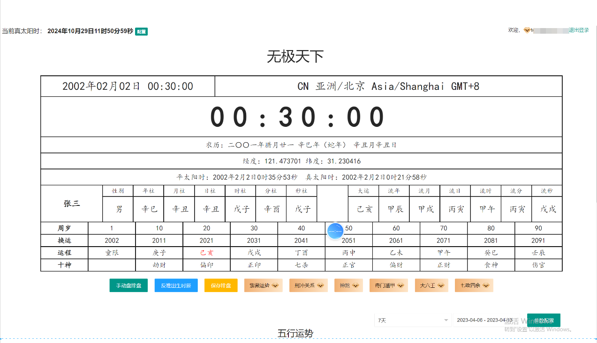

Four Pillars
A timeline from natal pillars to later periods
The screen brings together birth time, lunar date, coordinates, apparent solar time, Four Pillars, major cycles and later periods. The corresponding JavaScript handles calendar and stem-branch data.